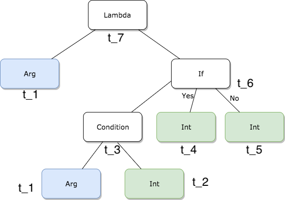

Full name: index.myfn
NCRAFTS - May 2018
Context is everything
Programming paradimgs
Disclaimer:
╯°□°）╯︵ ┻━┻
Irish-isms ahead
Craic, eejit, etc are common use irish slang.
- Eejit – an idiot or a fool, but more often it’s used in an affectionate (yet still mocking!) manner.
- Grand: average, not too bad, definetly not great.
- Cop on - common sense
- Give out - complaint
Paradigms
- A (Simplified) programmer's view
- Programming Language designers view
- A study about paradigms
- In science
This is Bacon

Delphi
VB.net
C# (some Js when jQuery was new, some Java)
F# / C#
Scala
Referential transparency
less mutable state!!
No exceptions for flow control!!
.. and more
Bacon's friends felt awkward

Bacon's FP
- Typed FP
- FP everywhere
- Aspiring to purity / Total functions
Problems (Bacon's view)
- Dependency management
- Type tetris
- Complicated concepts
... is it worth it?... is it the best way?
Bacon dreams of well structured programs
Well-structured software is easy to write and to debug, and provides a collection of modules that can be reused to reduce future programming costs. [Why FP matters. John Hughes]
Meet Ooooo

C++ and C#
Works with Bacon
Shipping is everything
Starting to do some functional programming
"Functional programming has emerged since the mid-2000s as an attractive basis for software construction. One reason is the increasing importance of parallelism and distribution in computing." Odersky, Rompf April 2014
"...especially its (Scala) focus on pragmatic choices that unify traditionally disparate programming-language philosophies (such as object-oriented and functional programming) Odersky, Rompf April 2014
SOLID looks a lot like FP when you squint
From the PL designers
Scala is very much about better component oriented programming for the Java platform. Although we do a good job of object oriented programming which is very nice in F#, we haven't thought to make fundamental improvements at the component level, in a sense. We are quite happy to say "You are making components? OK, make it a .NET component". Don Syme - March 2009
"...[Scala] focus on pragmatic choices that unify traditionally disparate programming-language philosophies (such as object-oriented and functional programming). The key lesson is these philosophies need not be contradictory in practice. [Odersky, Rompf - April 2014]
Regarding functional and object-oriented programming, one fundamental choice is where to define pieces of functionality (...) ...and Scala gives programmers the choice. [Odersky, Rompf - April 2014]
Choice also involves responsibility, and in many cases novice Scala programmers need guidance to develop an intuitive sense of how to structure programs effectively. [Odersky, Rompf - April 2014]
When Oooo and Bacon talk, they often disagree and call each other names
[Ursula K. Le Guin, The Left Hand of Darkness]"'How would it ever occur to a sane man that he could fly?' Estraven said sternly. It was a fair response, on a world where no living thing is winged.”
Paradigms
A programming paradigm
"...is an approach to programming a computer based on a mathematical theory or a coherent set of principles." [Programming Paradigms for Dummies: What Every Programmer Should Know - Peter Van Roy]
All but the smallest toy problems require different sets of concepts for different parts. This is why programming languages should support many paradigms.[Programming Paradigms for Dummies: What Every Programmer Should Know - Peter Van Roy]
A language should ideally support many concepts in a well-factored way, so that the programmer can choose the right concepts whenever they are needed without being encumbered by the others.[Programming Paradigms for Dummies: What Every Programmer Should Know - Peter Van Roy]
...it is certainly not true that there is one “best” paradigm [Programming Paradigms for Dummies: What Every Programmer Should Know - Peter Van Roy]
If the need for pervasive modifications manifests itself, we can take this as a sign that there is a new concept waiting to be discovered. [Programming Paradigms for Dummies: What Every Programmer Should Know - Peter Van Roy]
Type inference
1: 2: |
|
1: 2: 3: |
|
1: 2: 3: 4: 5: 6: |
|


1: 2: 3: 4: 5: 6: 7: 8: |
|
Results
1: 2: 3: 4: 5: 6: 7: |
|
A paradigm shifts
"a proliferation of compelling articulations, the willingness to try anything, the expression of explicit discontent, the recourse to philosophy and to debate over fundamentals" Kuhn, Thomas S.. The Structure of Scientific Revolutions.
Many langauges adding features generally associated with functional programming:
- lambdas
- functional data structures
- pattern matching, etc
C++, Java, C#
The decision to reject one paradigm is always simultaneously the decision to accept another, and the judgment leading to that decision involves the comparison of both paradigms with nature and with each other. Kuhn, Thomas S.. The Structure of Scientific Revolutions.
... particularly in periods of acknowledged crisis scientists have turned to philosophical analysis as a device for unlocking the riddles of their field. Scientists have not generally needed or wanted to be philosophers. Kuhn, Thomas S.. The Structure of Scientific Revolutions.
"... two scientific schools disagree about what is a problem and what a solution, they will inevitably talk through each other when debating the relative merits of their respective paradigms." Kuhn, Thomas S.. The Structure of Scientific Revolutions.
"He argued that competing paradigms are "incommensurable": that is to say, there exists no objective way of assessing their relative merits." Kuhn, Thomas S.. The Structure of Scientific Revolutions.
Are we scientists?
Almost always the people who achieve these fundamental inventions of a new paradigm have been either very young or very new to the field whose paradigm they change . Kuhn, Thomas S.. The Structure of Scientific Revolutions.
this is for all Bacons and Oooos out there
People are part of the context, make them part of your context
Studying the past yields interesting results.
Changing beliefs is a personal journey.
Thanks to:
Ross McKinlay
Chris Meiklejohn
Edwin Brady
Juan Manuel Serrano
Tomas Petricek
and others
Thank you
Andrea Magnorsky
@silverspoon
Sources | References
papers
articles, posts, videos
Images
- Cats with hats link